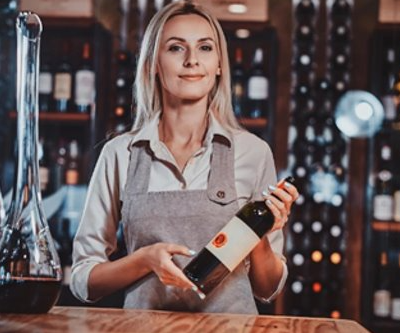

Quem Somos
Há 28 anos, a Vinheria foi fundada por uma família apaixonada por vinho. Com um pequeno espaço e muita determinação, eles transformaram sua paixão em um negócio que se tornou uma referência para os amantes do vinho em toda a região.
Há 28 anos, a Vinheria foi fundada por uma família apaixonada por vinho. Com um pequeno espaço e muita determinação, eles transformaram sua paixão em um negócio que se tornou uma referência para os amantes do vinho em toda a região.
Desde o início, a Vinheria se destacou por sua seleção cuidadosa de vinhos de qualidade e pelo atendimento personalizado oferecido a cada cliente. Os fundadores da Vinheria acreditavam que cada garrafa de vinho tinha uma história única para contar e que cada cliente merecia uma experiência única e personalizada.
Com o tempo, a Vinheria se tornou um ponto de encontro para amantes do vinho e um refúgio para quem procurava qualidade, variedade e atendimento excepcional. A loja cresceu e se expandiu, mas nunca perdeu a essência que a tornou tão especial desde o início.
Hoje, a Vinheria é administrada pelos filhos da família fundadora, que mantêm o legado de seus pais com a mesma paixão e dedicação. Eles ainda acreditam que cada garrafa de vinho tem uma história para contar e que cada cliente merece uma experiência única e inesquecível.
A Vinheria está empenhada em continuar a oferecer a seus clientes o melhor em vinhos e atendimento personalizado. Eles também estão animados em compartilhar sua paixão pelo vinho com mais pessoas, com o lançamento de sua loja online. Eles acreditam que, com sua experiência e dedicação, podem ajudar mais pessoas a descobrir o maravilhoso mundo dos vinhos e a desfrutar de experiências únicas e memoráveis.